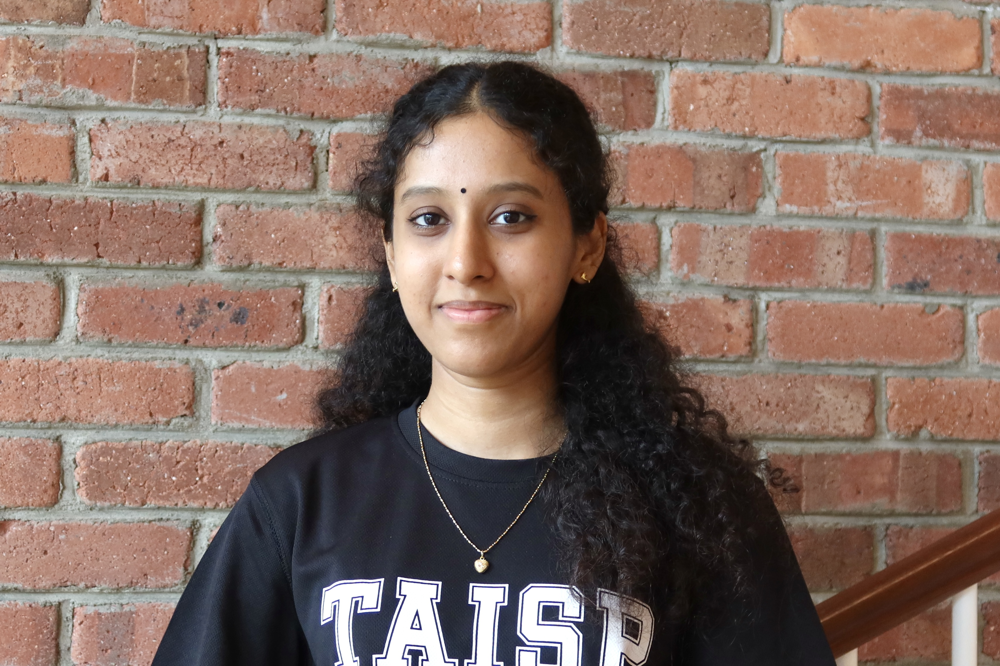

Hi, I'm Lakshmi! I'm building a career dedicated to AI Safety and Alignment.
Selected Projects
A consistency-probing method that detects when an LLM strategically underperforms ("sandbagging") on capability evaluations, with a written research report on the findings.
A two-stage safety guardrail that scores prompt risk and enforces policy before requests reach an LLM — served as a containerised FastAPI service with a RAG-backed policy layer.
Skills & Certification
Education
B.Comp (Hons) in Data Science and Artificial Intelligence
Nanyang Technological University, Singapore
GCE A-Levels
Raffles Institution, Singapore
Experience
Research Intern
Home Team Science & Technology Agency
Built safety infrastructure for autonomous robot agents: a 5-axis safety constitution and a multimodal runtime verifier that scores robot plans and live execution against it, deployed via FastAPI into the team's planning harness. Built an LLM-driven pipeline to benchmark VLM safety-judgment accuracy.
Fellow — Technical Fellowship
Nanyang AI Safety Hub (ATLAS Curriculum)
Completed a structured fellowship covering AI threat models and risk, mechanistic interpretability, scalable oversight and evaluation, and AI governance frameworks.
Nanyang Technological University
Conducted literature review on video diffusion models, surveying 20+ papers. Implemented one-frame inference techniques using FramePack to achieve consistent visual outputs and documenting findings for research reporting.
Alibaba-NTU Global e-Sustainability CorpLab
Designed GOALIE — a decision-making framework for LLMs in embodied environments, decomposing goals into subgoals with history summarisation and derailment detection. Achieved 86.67% task completion on ALFWorld benchmarks, outperforming baselines. Co-authored research report.
Projects
Browser designed for accessibility, making browsing inclusive through natural language intent parsing.
Visual novel for Deaf etiquette education — bridging communication gaps through interactive storytelling.
ML system for evaluating Google Local review quality. Trained Logistic Regression + fine-tuned RoBERTa on GoEmotions for emotion-based features.